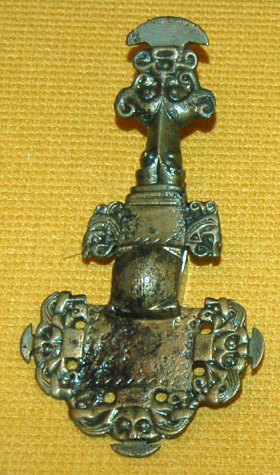
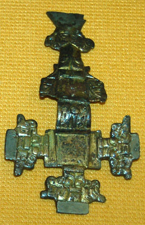
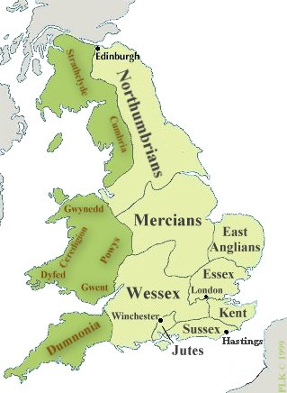
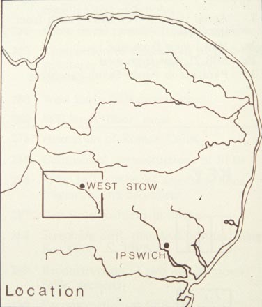
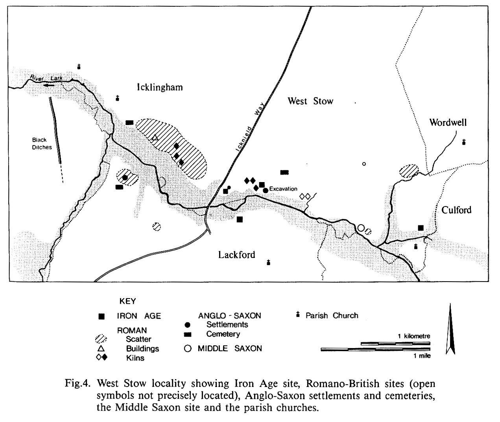

|
 Bronze brooches |
West Stow (450-650) |
 |
Site history
West Stow is located in the eastern part of
England, in the region called East Anglia:


From around 450 to 650 AD, the hill of West Stow, in the Lark River Valley, was occupied by an Anglo-Saxon village. The site had once been used by the Romans for a pottery manufacturing industry, but production had ended at least 200 years before the Anglo-Saxons arrived. About two miles to the west, there had been the large Roman settlement of Icklingham (shown on the map by the diagonal hatching), which, by the late fourth century, contained among other things a Christian church with a baptistery. The Roman site ceased to be occupied at about the same time that the Anglo-Saxon village appeared.

The village of West Stow was inhabited for about 200 years. After
around AD 650, the village at West Stow was gradually abandoned,
and settlement moved to a new village to the east, located around a
church.
West Stow was subsequently used for agriculture.
In the fourteenth century, West Stow was covered by three feet of windblown sand. This sand protected the remains of earlier occupation from destruction. In 1849, an Anglo-Saxon cemetery was discovered at West Stow. Materials were collected from the cemetery by people interested in antiquities, and by the owner of the property. The Roman pottery kilns on the site were excavated in the 1890's.
In 1947, two more Roman pottery kilns were excavated, and it was recognized that there had been an Anglo-Saxon village on the site. The village was excavated by Vera Evison from 1957-61, and then by Stanley West from 1965-72.
Since excavation, the site has been maintained as a park, in which experimental archaeologists have reconstructed buildings, and interpreted Anglo-Saxon crafts and practices, based on the archaeological finds.
Illustrations taken from Stanley E. West and Valerie Cooper, West Stow: the Anglo-Saxon Village (Ipswich, 1985).
For more information, see http://stedmundsburychronicle.com/saxons.htm